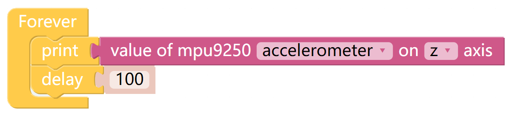
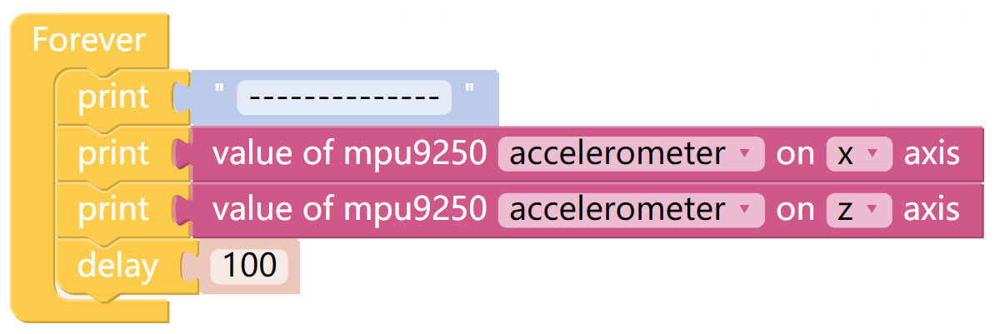

Read from MPU9250¶
校准完MPU9250模块之后，我们来打印MPU9250模块读取到的数据。
TIPS¶
读取MPU9250模块的数据，修改第一个下拉选项，选择accelerometer，gyroscope和magnetometer。 修改第二个下拉选项，选择x，y和z。例如你选择了accelerometer和x，那么将返回X Sense HAT 在x轴上的加速度值。
The Print function can print data such as variables and text for easy debugging.

The data printed by the Print function will appear in the Debug Monitor on the left. In other interfaces, you can also click on the Debug Monitor in the upper right corner.

accelerometer和gyroscope的使用帮助¶
适用于accelerometer和gyroscope的坐标图¶
下图是accelerometer和gyroscope映射到X Sense HAT上的x轴，y轴和z轴, 在读取accelerometer和gyroscope在不同轴上的值时，我们都需要用到这个坐标图。

Note
注意不同数轴的符号，如果在x轴的正半轴（x+）上有一个加速度值，那么它的单位为正。
读取accelerometer的值¶
通过accelerometer，我们可以读取X Sense HAT在不同坐标轴上的加速度值，单位大小为g。
将X Sense HAT水平放置，此时X Sense HAT会受到一个垂直向下的重力加速度，大小为g（g=9.80665 N/kg）。

当我们来打印accelerometer 在z轴上的加速度值时，打印窗口会显示一个-1左右的值 （由于加速度值在 z 负半轴，所以单位为负）。
将X Sense HAT绕着y轴顺时针旋转，此时X Sense HAT受到的重力加速度可以分解成一个x轴上的加速度和 一个z轴上的加速度，我们可以通过打印accelerometer在x轴上的值和accelerometer在z轴上的值来 分别获取X Sense HAT在x正半轴上加速度的值（X1）和在z负半轴上加速度的值（Z1）。



{kind=link}
{kind=link}
{kind=link}
{kind=link}
{kind=link}
{kind=link}